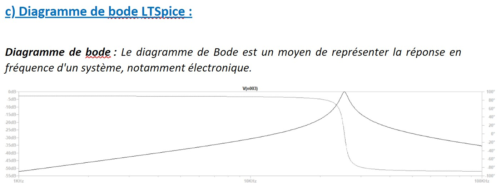
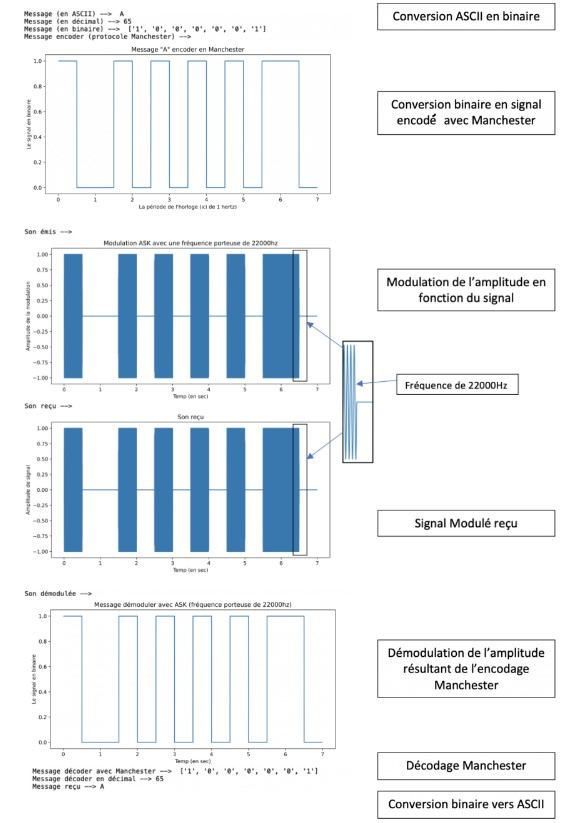
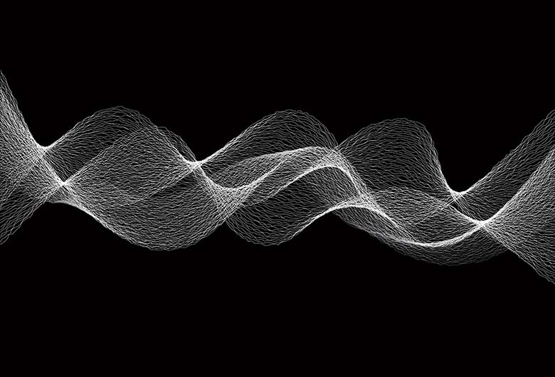

Étapes Clés du Projet

Livrable 1 : Caractéristiques d'une onde
Proposition d'une solution de communication basée sur les caractéristiques des ondes sonores.
Télécharger le livrable 1

Livrable 2 : Réponse fréquentielle
Étude de la réponse fréquentielle et filtrage du signal sonore à haute fréquence.

Livrable 3 : Chaîne de transmission
Modélisation complète de la chaîne de transmission du signal, du micro à la réception.

Livrable 4 : Modélisation numérique
Réalisation d'un prototype numérique pour démontrer la faisabilité de la solution proposée.
Télécharger le livrable 4